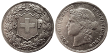
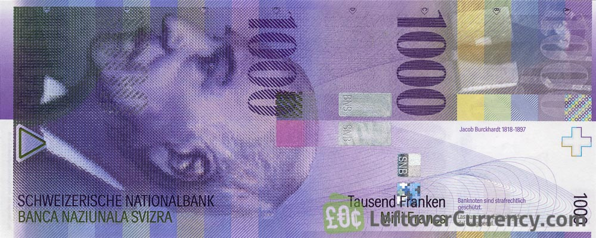

The Swiss Franc is the currency of Switzerland and Liechtenstein. Despite its name sounding french, it is not the legal tender of france as the French use the Euro.
A hundredth of a franc, what Americans refer to as the cent to the USD's dollar, is called the Rappen in German, centesimo in Italian, centime in French, rap in Romansh and does not have a standardized name in the same manner as the Franc does.
The Swiss Franc is a colorful bill, looking very much like the money used in the board game Monopoly as a result. However, its the colors of the Franc bills and the grand designs of the coin Francs that lead to its appeal to collectors.
The most popular of these Franc variants are the high value banknotes like the 1000-Franc note, despite the fact that these notes are not being used for transactions.
This is due to the negative interests rates being given by many Swiss banks on large deposits making it more profitable to keep physical cash in Switzerland. According to Coinworld.com about 59 percent of all Swiss Francs in circulation by value are 1000-franc notes
